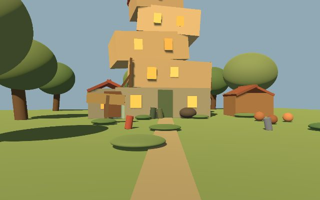
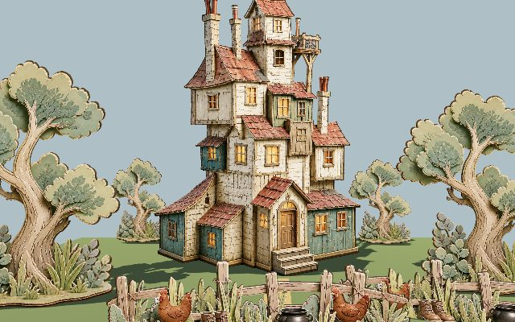
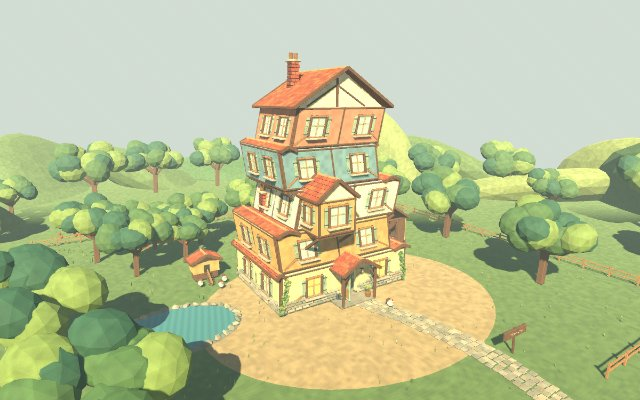
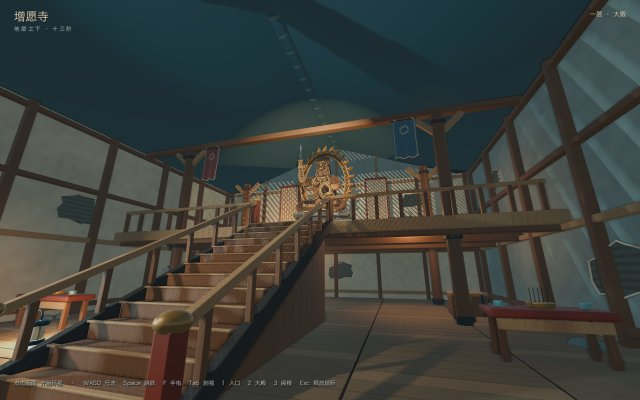

3D World
三个模型，做同一个小说里的场景
给定一本小说里的一处地方，让模型把它变成能走进去的三维空间。 同一个场景交给不同的模型和不同的做法各做一遍，放在一起看差距。
陋居
那是一座歪歪扭扭的石头房子，看着像原本只有一间小猪圈， 后来东一间西一间地往上加，直到加成好几层高，歪斜得只能靠魔法才立得住。 屋顶上插着四五根烟囱，院门口的木牌写着「陋居」， 门边一堆积着雨靴和锈得厉害的坩埚。
《哈利·波特与密室》· 韦斯莱家
Sol 三次尝试：一句话直出 → 转二维取巧 → 约束管线加 Blender；最后是 Astra 一句话直出
-

GPT 5.6 Sol初版 · 一句话直出输入：一句话 Query · 无参考图 · 无人工建模
Text to 3D 直接产出。房子的层数、烟囱、院子都在正确的位置上， 但每个物件都还是一个盒子，看得出布局，看不出这是石头房。
- 独立构件
- 77 图元
- 素材体积
- 0.13 MB
- 贴图
- 0
- 可走空间
- 仅室外
-

GPT 5.6 Sol转二维的尝试输入：一句话 Query · 生成 2D 图后切层
既然建模不行，就先画二维图再切成一层层卡片立起来。 画面一下就对了，连母鸡和坩埚都有，代价是只有正面这一个角度成立。
- 独立构件
- 10 卡片
- 素材体积
- 16.4 MB
- 贴图
- 5
- 可走空间
- 1 间
-
 GPT 5.6 Sol
约束管线 + Blender
GPT 5.6 Sol
约束管线 + Blender输入：约束好的 pipeline · 分阶段产出 + Blender 建模
同一个模型，这次不再让它一把出图，改成约束 pipeline 和工作流， 再接 Blender 建模。第一次真的能走进屋里上楼，12 个房间里 8 个在二层以上。
- 独立构件
- 973
- 素材体积
- 62.1 MB
- 贴图
- 28
- 可走空间
- 12 间 含 8 楼上
-

GPT 6 AstraAstra · 一句话直出输入：一句话 Query · 0 干预 0 约束
和第一张同样是一句话，这次直接给出五层主屋、悬挑书房、八个上层房间和连续折返楼梯， 院子里有鸡舍、菜园、果园和池塘。
- 独立构件
- 329
- 素材体积
- 35.7 MB
- 贴图
- 0 纯材质
- 可走空间
- 室内外全通
增愿寺
山里那座早已没人照看的寺庙，正殿里供着一尊高大的不动明王木像。 后山塌方过好几次，泥土一层压一层地埋上来，把整座殿身裹进了山体， 只在侧墙上留下一个还能钻进去的窗洞。通往二层的那道木梯，一共十三级。
《消失的13级台阶》
两条路线：自建 Agent 管线 vs Astra 一句话直出
-
 自建 Agent
管线 · 垂直切片
自建 Agent
管线 · 垂直切片输入：原著事实 + 14 张概念图 · 分阶段产出
管线按空间合同一步步推进，做出了那道十三级木梯和它通向的二层。 楼梯、扶手、落脚平台都对，寺庙其余部分还没有铺开。
- 独立构件
- 78
- 素材体积
- 0.76 MB
- 贴图
- 0
- 可走空间
- 2 层 局部
-

GPT 6 AstraAstra · 地层之下输入：原著事实摘要 + 概念图 · 0 干预
整座寺连着山体一起做完：外围林地、塌方面、调查栈道、绳索下降井、侧墙窗洞、 两层木构大殿和那尊不动明王。按 Tab 能把山体剖开看剖面。
- 独立构件
- 3,251
- 素材体积
- 23.9 MB
- 贴图
- 0 纯材质
- 可走空间
- 山道到二层
汤屋
天一擦黑，街上那些空着的食铺就一家家亮起灯来， 蒸腾的热气和饭菜的香味涌到石板路上。 过了那座红桥，就是那幢层层叠叠、灯火通明的大屋子。
《千与千寻》· 油屋与神隐街道
只有 Astra 一条路线，另外两条没有做过这个场景